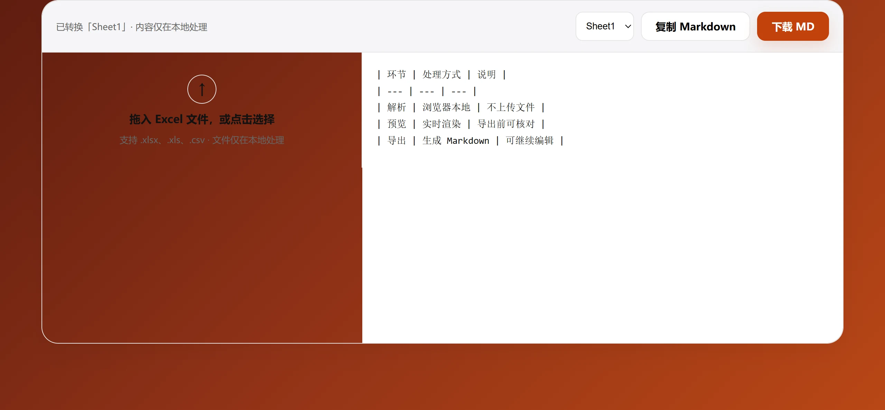

上传单个文件
支持 .xlsx、.xls、.csv，文件不上传服务器。
免费在线工具
将 Excel / CSV 表格数据转换为可复制、可下载的 Markdown 表格，用于 Obsidian、Notion 与 AI 知识库。文件只在浏览器本地处理。

三步完成
支持 .xlsx、.xls、.csv，文件不上传服务器。
多工作表文件可选择需要转换的 Sheet。
获得标准 Markdown 表格，用于知识库或 AI 工作流。
常见问题
转换在浏览器本地完成。
支持 xlsx、xls 与 csv 文件，单个文件不超过 20MB。
不会。文件只在你的浏览器中读取和处理。
第一版转换表格数据本身，不保留 Excel 的颜色、合并单元格等视觉样式。
可以。复制生成的标准 Markdown 表格后，可粘贴到 Notion、Obsidian 或 AI 知识库工作流中。
上传后可以选择需要转换的工作表；请逐个检查并复制或下载对应的 Markdown 结果。
适用场景
竖线表格粘贴进对话框后不会错行，比截图更可靠。
Markdown 表格在 Git 里能逐行对比，二进制表格文件不能。
这些工具原生渲染竖线表格，不需要额外插件。
限制
合并区域只有左上角单元格存值，被覆盖的单元格是空的，表头要手动补。
一次只转一张，切换选择器后再转。
扫描件没有文本层，需要先做 OCR 才能转换。
其他工具